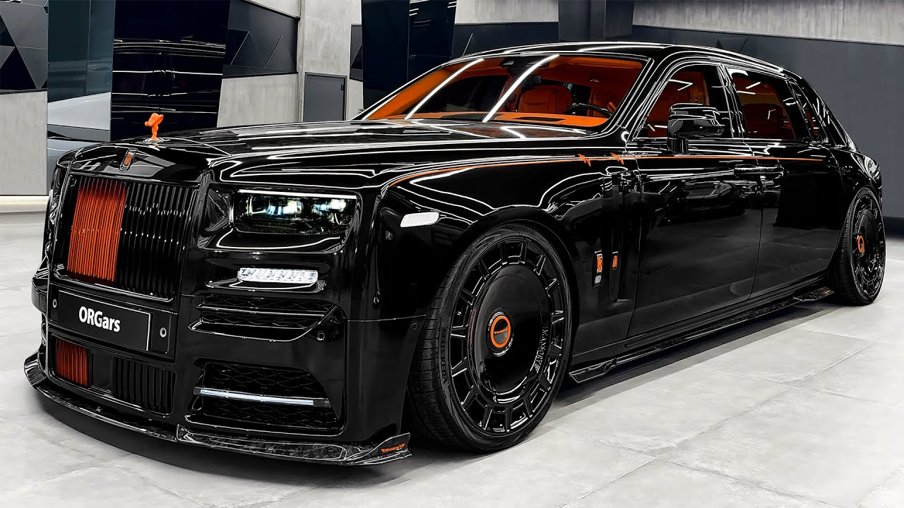
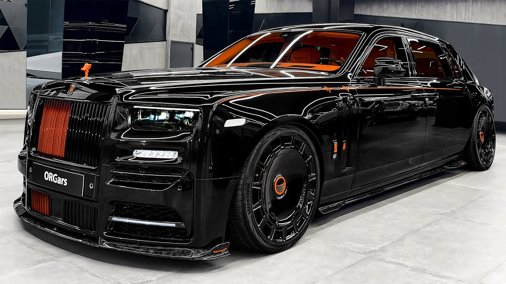

Les modèles les plus emblématiques

 

Plongez dans l'histoire des modèles de voitures de luxe les plus emblématiques. Découvrez ce qui rend chaque modèle unique et désirable.
Ferrari LaFerrari
LaFerrari est une hypercar hybride qui allie design futuriste et technologies de pointe. Lancée en 2013, elle incarne le summum de la performance et de l'innovation de Ferrari.
Lamborghini Aventador
L'Aventador est une supercar célèbre pour son design agressif et son moteur V12 puissant. Depuis sa sortie en 2011, elle est devenue une icône de la marque Lamborghini.
Rolls-Royce Phantom
La Rolls-Royce Phantom est l'expression ultime du luxe et du confort. Chaque détail est soigneusement conçu pour offrir une expérience de conduite inégalée.